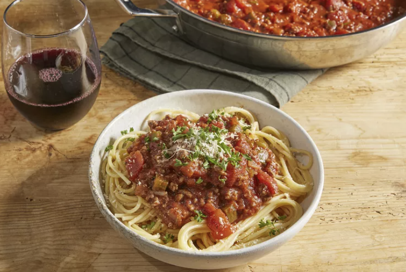

Spaghetti

There's nothing like classic spaghetti and meat sauce to bring people together around the dinner table. This
homemade spaghetti sauce with ground beef recipe will satisfy all your comfort food cravings.
Ingredients
- 1 pound ground beef
- 1 medium onion, chopped
- 4 cloves garlic, minced
- 1 small green bell pepper, diced
- 1 (28 ounce) can diced tomatoes
- 1 (16 ounce) can tomato sauce
- 1 (6 ounce) can tomato sauce
- 2 teaspoons dried oregano
- 2 teaspoons dried basil
- 1 teaspoon salt
- 1/2 teaspoon ground black pepper
Directions
- Combine ground beef, onion, garlic, and green pepper in a large saucepan over medium-high heat. Cook andstir
until meat is browned and crumbly and vegetables are tender, 5 to 7 minutes. Drain grease.
- Stir diced tomatoes, tomato sauce, and tomato paste into the pan. Season with oregano, basil, salt, and
pepper. Simmer spaghetti sauce for 1 hour, stirring occasionally.
- Fill a large pot with six quarts water. Bring to a boil. Add salt. Be generous, this salt seasons the pasta
as it cooks and penetrates into the noodles.
- Add the dried pasta. Stir until the water returns to a boil. Set a timer for one minute less than the
package instructions recommend. Test for doneness at this point. If you like your pasta very firm (al dente)
or are going to be simmering for a while in sauce, check and remove even sooner.
- Now, strain and cool briefly, but do not rinse. Rinsing washing away the starch that helps the sauce stick
to the pasta. Toss in olive oil instead.
- When ready to use, add to warm sauce, toss and finish cooking or chill for later use.